| surf-fit - Surface Fitting |
surf-fit - Surface Fitting (volume 1)
Agent Zhang (章亦春) <agent2002@126.com>
Create: 2005-01-07
Last Update: 2005-01-08
本文将对 coord-trans 文档产生的理论坐标系中各条曲线上的采样点所对应的 三维空间中的点进行研究。我们的目标是得到由这些点所确定的三维曲面。
我们首先从 data/2d-points.yml 文件读取各条曲线上的二维点的坐标：
Perl
use YAML qw(LoadFile Dump DumpFile);
$curves = LoadFile "data/2d-points.yml";
Output:
HASH(0x1e786b4)
下面我们将之转换成三维坐标（将各条曲线所对应的键值 XXXmm 中的数 XXX 作为第三个分量：
Perl
use Scalar::Util qw(looks_like_number);
@points_3d = ();
for my $key (keys %$curves) {
my $z = $key;
$z =~ s/\s+|mm$//g;
die if not looks_like_number($z);
my @points = @{ $curves->{$key} };
@points = map { [@$_, $z] } @points;
unshift @points_3d, @points;
}
scalar(@points_3d);
Output:
914
此时我们所有的实验数据就“浓缩”成了一组三维空间中的点的坐标。
下面不妨用 Maple 的 MESH 绘图功能将这些三维点所在的曲面作出来以便 获得“第一印象”。这对随后的经验公式形式的选择工作而言是至关重要的。
先将数据导入到 Maple 上下文中：
Perl
use PerlMaple;
$maple = PerlMaple->new;
my @points = map { '['.join(',', @$_).']' } @points_3d;
my $expr = '['.join(',', @points).']';
$maple->eval_cmd("points := $expr:");
No Output
Maple
with(plots):
plotsetup(gif,plotoutput="image/diag1a.gif",plotoptions="height=300,width=300"):
surfdata(points, axes=BOXED, labels=[z,x,y], color=yellow);
No Output
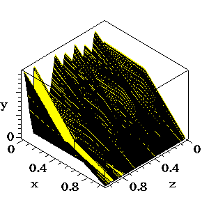
很遗憾，我们看到，由于采样点过于集中在那几条曲线上，导致 MESH 不能画出平滑的 曲面。
通过观察采样点在 x-y 平面上的分布：
我们不难发现，在 z 一定的情况下，采样点构成一条形状类似对数函数的曲线， 且通过坐标原点。因此我不妨设此时的经验公式为 y = a*ln(x+1)^b 的形式（这 里 a 和 b 都是待定常数，且都由 z 决定）。
为了使用最小二乘法进行拟合，我们必须先给定常数 b. 我们不妨先设 b = 1. 则我们现在就可以用此经验公式对 z = 0.8 的曲线进行最小二乘拟合了：
Perl
my @points = map { '['.join(',', @$_).']' } @{ $curves->{'0.8mm'} };
my $expr = '['.join(',', @points).']';
$maple->eval_cmd("points := $expr;");
Output:
points := [[4.549186141, 3.885216527], [7.836318268, 7.513025032], [11.12345039, 11.14083354], [15.67851249, 14.80544595], [18.96564461, 18.4332549], [23.08631157, 22.52680698], [27.61787006, 27.07383584], [35.04917275, 33.91278086], [40.40251427, 39.36676195], [46.97677851, 46.62237896], [53.18715848, 51.65968763], [58.96314328, 57.1259364], [64.72737638, 63.0333934], [73.02746929, 69.01445821], [80.09488768, 73.6350949], [85.49523636, 77.32424399], [93.8423365, 81.54047593], [98.80829011, 85.65856468], [103.7977473, 88.89423744], [110.4425223, 93.502606], [118.7426153, 99.48367126], [126.6905757, 102.8052195], [132.0909244, 106.4943682], [138.7474513, 110.661529], [145.028342, 113.0515892], [150.8748376, 115.8705895], [158.4119066, 118.7386623], [166.3363634, 122.9426266], [174.7069671, 126.2764429], [185.5781753, 131.0074923], [198.1752123, 134.4639885], [209.457312, 139.6485132], [219.9528842, 142.6024615], [230.0258129, 145.5441422], [244.7243146, 149.5031868], [255.2198867, 152.4571351], [265.2928155, 155.3988157], [275.3657444, 158.3404963], [289.1954558, 163.1574211], [300.5245627, 166.5771135], [312.2998166, 169.1266579], [324.0750704, 171.6762023], [332.903573, 173.6986626], [342.5656103, 176.1868669], [348.8465011, 178.5769275], [359.3655768, 180.6484594], [369.0628694, 181.8130399], [382.0707978, 185.7230125], [403.1089494, 189.8660771], [420.3315588, 194.3399377], [432.9403477, 197.3552262], [446.8288182, 199.9661108], [459.4493588, 202.540191], [474.1478605, 206.499236], [487.1910441, 209.0855844], [501.9130497, 212.1622126], [518.3256282, 215.2879132], [534.3155633, 218.4013457], [544.8346389, 220.472878], [552.8296069, 222.0295943], [562.9377909, 223.6476502], [573.867758, 226.1726589], [585.6782674, 227.3985791], [596.6434898, 228.5999631], [605.0493489, 230.6101556], [617.6816414, 232.7430277], [629.4803989, 234.4101561], [641.2556525, 236.9597005], [653.0779142, 237.7444125], [671.1575624, 241.8016012], [691.8200777, 244.1675657], [708.7023065, 245.540702], [722.6025286, 247.7103783], [737.3480375, 249.9045905], [747.0335785, 251.5103788], [757.564406, 253.1407029], [769.3631639, 254.8078313], [781.6080678, 255.6048114], [795.9309337, 257.7867559], [803.5620165, 257.1251638], [811.1108376, 259.552028], [821.6534165, 260.7411447], [827.5821748, 260.4716884], [843.5956138, 262.7027049], [889.1353259, 267.9985219], [898.4217272, 268.7096256], [910.2439881, 269.4943381], [918.6968544, 269.7396978], [932.6088288, 271.4681664], [950.7472361, 273.3193144], [973.1120759, 275.2931431], [979.8743692, 275.4894308], [1004.37593, 276.6421828], [1009.025007, 276.7771308], [1019.966726, 278.8609312], [1025.883732, 279.0326835], [1031.800738, 279.2044354], [1041.087139, 279.9155396], [1049.974401, 279.7319596], [1055.879656, 280.3449197], [1066.821375, 282.4287197], [1073.184528, 281.7303237], [1080.780356, 282.3923563], [1090.477648, 283.5569364], [1097.662585, 283.7654922], [1105.692808, 283.9985842], [1112.865992, 284.6483487], [1119.604782, 285.7270528], [1125.521788, 285.8988047], [1132.27233, 286.536301], [1140.279049, 287.651809], [1151.267775, 287.970777], [957.5330324, 272.6331861], [894.2070453, 268.145738], [648.405334, 238.4918806], [717.9534521, 247.5754304], [776.1137048, 255.4453276], [394.6678348, 189.1795087], [388.3751922, 187.2306567], [295.065455, 165.094005], [192.2934612, 132.9686119], [567.5633635, 224.6650146], [1144.481979, 288.6569049]]
Maple
with(CurveFitting):
LeastSquares(points, x, curve=a*ln(x+1)^1):
c := evalf(%);
Output:
c := 34.23530935*ln(x+1.)
Maple
c := eval(c, I=0);
with(plots):
plotsetup(gif, plotoutput="image/diag2a.gif", plotoptions="height=300, width=600"):
pplot := pointplot(points, symbol=CIRCLE, color=black):
cplot := plot(c, x=0..1200, color=red):
display([cplot, pplot], axes=BOXED, scaling=CONSTRAINED);
Output:
c := 34.23530935*ln(x+1.)
我们看到，曲线拟合得并不理想，看来我们的经验公式还不够合适。于是我们想到了对 ln 进行平方： y = a*ln(x+1)^2
为了方便起见，我们将上面的拟合和绘图代码进行函数封装：
Perl
sub fit_curve {
my ($key, $degree) = @_;
my @points = map { '['.join(',', @$_).']' } @{ $curves->{$key} };
my $expr = '['.join(',', @points).']';
$maple->eval_cmd(<<".");
points := $expr;
with(CurveFitting):
LeastSquares(points, x, curve=a*ln(x+1)^$degree):
c := evalf(%);
c := eval(c, I=0);
f := unapply(c, x);
.
return $maple->eval_cmd("c;");
}
sub plot_curve {
my $imfile = shift;
$maple->eval_cmd(<<".");
with(plots):
plotsetup(gif, plotoutput="$imfile", plotoptions="height=300, width=600"):
pplot := pointplot(points, symbol=CIRCLE, color=black):
cplot := plot(c, x=0..1200, color=red):
display([cplot, pplot], axes=BOXED, scaling=CONSTRAINED);
.
}
No Output
然后我们尝试 ln 的次数为 2 的经验函数：
Perl
fit_curve('0.8mm', 2);
plot_curve('image/diag3a.gif');
No Output
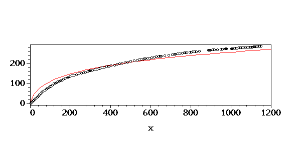
显然此时的拟合效果比 b = 1 的时候好得多。我们再尝试一下 b = 3，看看拟合下来的结果是不 是会更加接近采样点：
Perl
fit_curve('0.8mm', 3);
plot_curve('image/diag4a.gif');
No Output
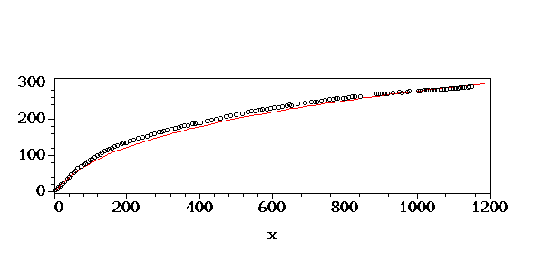
哇，几乎完全重合了耶！我们再试一试 b = 4 看看呢？
Perl
fit_curve('0.8mm', 4);
plot_curve('image/diag5a.gif');
No Output
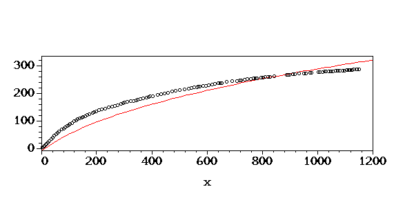
啊，这一回看来随着 b 的增加，拟合出来的经验曲线反而开始远离我们的采样点了。 由此可见，我们应该可以 2 到 3 之间找到一个数 b，使得我们的经验曲线与所有采样点 的误差达到最小。如何去导找这个数 b 呢？我们下面就对此进行讨论。
以固定步长，比如 0.1，尝试 2.1 ~ 3.9 之间共 19 个数作为 b 的取值，分别代入到我们的经验公式，使用最小二乘法对采样点 进行拟合，便可以得到 19 个对应的 a 的取值。比较这 9 个拟合得到的经验公式相对 于采样点的误差，其中误差最小的一个经验公式便是我们想要的。
为了方便起见，我们定义如下误差计算函数：
Maple
calc_err := proc()
evalf(convert(map(i->( i[2] - eval(f(i[1]), I=0) )^2, points), `+`));
end proc:
No Output
哇，我没想到用一行 Maple 代码就把误差的计算给搞定了！下面我们就开始以 0.1 为步长遍历 2.1 ~ 3.9 这个区间：
Perl
$maple->ReturnAST(0);
@errs = ();
my $b = 2.1;
while ($b <= 3.9) {
my @rec = fit_curve('0.8mm', $b);
push @rec, $maple->calc_err();
push @errs, [@rec];
$b += 0.1;
}
Dump(@errs);
Output:
---
- 4.600614104*ln(x+1.)^2.1
- 28940.47826
---
- 3.822024357*ln(x+1.)^2.2
- 21261.58553
---
- 3.174046141*ln(x+1.)^2.3
- 15025.17862
---
- 2.635021907*ln(x+1.)^2.4
- 10134.73291
---
- 2.186828746*ln(x+1.)^2.5
- 6500.969752
---
- 1.814314436*ln(x+1.)^2.6
- 4041.188414
---
- 1.504820434*ln(x+1.)^2.7
- 2678.672039
---
- 1.247779143*ln(x+1.)^2.8
- 2342.159466
---
- 1.034374447*ln(x+1.)^2.9
- 2965.374240
---
- .8572559996*ln(x+1.)^3
- 4486.603668
---
- .7102990761*ln(x+1.)^3.1
- 6848.321624
---
- .5884029679*ln(x+1.)^3.2
- 9996.849780
---
- .4873219177*ln(x+1.)^3.3
- 13882.05257
---
- .4035234878*ln(x+1.)^3.4
- 18457.06191
---
- .3340700207*ln(x+1.)^3.5
- 23678.02810
---
- .2765195089*ln(x+1.)^3.6
- 29503.89374
---
- .2288427636*ln(x+1.)^3.7
- 35896.18874
---
- .1893542507*ln(x+1.)^3.8
- 42818.84257
我们从中筛选出误差最小的一个经验公式：
Perl
@errs = sort { $a->[1] <=> $b->[1] } @errs;
Dump $errs[0];
Output:
---
- 1.247779143*ln(x+1.)^2.8
- 2342.159466
我们画出 b = 2.8 时的经验曲线和采样点：
Perl
fit_curve('0.8mm', 2.8);
plot_curve('image/diag6a.gif');
No Output
我们看到此时的经验曲线比先前任何一条都要接近采样点，从而证明了我们 前面以固定步长进行区间遍历的方法是有效的。然而不幸的是，如果我们 将步长减小到 0.01，即让 b 的有效数字位数提高 1，则我们所需的计算 量也将提高一个数量级。然且当我们的遍历区间变大，比如变成 1 ~ 5 的 话，计算量也会显著提高。由此可见，我们的这种方法不是很有效率。
为此，我们需要寻找更为聪明的方法。
通过检查前面的那些图象和遍历生成的误差列表，我们可以发现以下规律：
+++++++++++++++-----------------
当然，实际的符号序列可能会稍有出入，但总的趋势应该如此。
当 b 比“理想值”大的时候，则跟上一种情况恰好相反：曲线的右半段在采 样点的下方，而右半段在采样点的上方。因此，如果用曲线上的点的纵坐标 减去对应的采样点的纵坐样的话，得到的各点的误差符号将类似于下面的模式：
---------------+++++++++++++++++
我们下面就来看看对于实际得到的误差的符号序列是怎样的。
为了方便起见，我们定义一个 Perl 函数来计算正负号序列：
Perl
sub sign_seq {
$maple->ReturnAST(1);
my $list = $maple->eval('lst');
$maple->ReturnAST(0);
return map { "$_" > 0 ? '+' : '-'; } $list->ops;
}
No Output
我们来简单测试一下它：
Perl
$maple->eval_cmd("lst := [-3, 5, -1, -5, 9, 10];");
join(' ', sign_seq);
Output:
- + - - + +
我们还需要一个 Maple 函数用来计算纵坐标误差序列：
Maple
err_seq := proc()
global lst;
lst := map(i->i[2]-eval(f(i[1]),I=0), points);
end proc:
No Output
现在我们可以来看看当 b 以 0.1 为步长时在区间 [2.1, 3.9] 上取值 时，经验函数的误差的符号序列了：
Perl
$maple->ReturnAST(0);
@res = ();
my $b = 1.5;
while ($b <= 3.9) {
my @rec = fit_curve('0.8mm', $b);
$maple->err_seq();
my @signs = sign_seq;
push @res, join('', @signs);
$res[-1] .= ' *' if $b eq 2.8;
$b += 0.1;
}
join "\n", @res;
Output:
---------------------------------------------------------++++++++++++++++++++++++++++++++++++++++++++++++++++++++++++----++
----------------------------------------------------------+++++++++++++++++++++++++++++++++++++++++++++++++++++++++++----++
----------------------------------------------------------+++++++++++++++++++++++++++++++++++++++++++++++++++++++++++----++
----------------------------------------------------------+++++++++++++++++++++++++++++++++++++++++++++++++++++++++++----++
----------------------------------------------------------+++++++++++++++++++++++++++++++++++++++++++++++++++++++++++----++
----------------------------------------------------------+++++++++++++++++++++++++++++++++++++++++++++++++++++++++++----++
---------------------------------------------------------++++++++++++++++++++++++++++++++++++++++++++++++++++++++++++----++
---------------------------------------------------------++++++++++++++++++++++++++++++++++++++++++++++++++++++++++++----++
--------------------------------------------------------+++++++++++++++++++++++++++++++++++++++++++++++++++++++++++++----++
-------------------------------------------------------++++++++++++++++++++++++++++++++++++++++++++++++++++++++++++++----++
-----------------------------------------------------++++++++++++++++++++++++++++++++++++++++++++++++++++--+--+-+++++----++
-----------------------------------------------------++++++++++++++++++++++++++++++++++++++++-++----------------+++++----+-
-----------------------------+-+------+++---++-+-++++++++++++++++++++++++++++++++++++++++++----------------------+++++++-+-
----------------------+++++++++++++++++++++++++++++++++++++++++++++++++++++++++++++++++--------------------------+++++++++- *
-------------------+++++++++++++++++++++++++++++++++++++++++++++++++++++++++++++++++++----------------------------++++++++-
------------++++++++++++++++++++++++++++++++++++++++++++++++++++++++++++++++++++++++------------------------------++++++++-
+----------++++++++++++++++++++++++++++++++++++++++++++++++++++++++++++++++++++-++--------------------------------++++++++-
+++------++++++++++++++++++++++++++++++++++++++++++++++++++++++++++++++++++++++-++--------------------------------++++++++-
+++-+++++++++++++++++++++++++++++++++++++++++++++++++++++++++++++++++++++++++++-+---------------------------------++++++++-
+++++++++++++++++++++++++++++++++++++++++++++++++++++++++++++++++++++++++++++++-----------------------------------++++++++-
+++++++++++++++++++++++++++++++++++++++++++++++++++++++++++++++++++++++++++++++-----------------------------------++++++++-
+++++++++++++++++++++++++++++++++++++++++++++++++++++++++++++++++++++++++++++++-----------------------------------++++++++-
++++++++++++++++++++++++++++++++++++++++++++++++++++++++++++++++++++++++++++++------------------------------------++++++++-
++++++++++++++++++++++++++++++++++++++++++++++++++++++++++++++++++++++++++++++------------------------------------++++++++-
我们在图中亦用 * 将前面的“笨方法”得到的“最佳位置”，即 b = 0.8 所对应的误差行 标出。我们从图案中容易看到下面的规律：
由于对各行来说，正负号的总数是一致的，因此如果改为统计正号的数目，则我们 也能得到类似的规律。
我们不妨再用一条其他的曲线来进行验证：
对于曲线 3.2mm 而言，其最佳 b 值可以用“笨方法”求出：
Perl
$maple->ReturnAST(0);
@errs = ();
my $b = 3.5;
while ($b <= 5.5) {
my @rec = fit_curve('3.2mm', $b);
push @rec, $maple->calc_err();
push @errs, [@rec];
$b += 0.1;
}
Dump(@errs);
Output:
---
- .7308792563*ln(x+1.)^3.5
- 122632.9547
---
- .6064523394*ln(x+1.)^3.6
- 99149.80442
---
- .5031177377*ln(x+1.)^3.7
- 78517.99270
---
- .4173182536*ln(x+1.)^3.8
- 60615.76162
---
- .3460928758*ln(x+1.)^3.9
- 45327.51026
---
- .2869776294*ln(x+1.)^4
- 32543.38628
---
- .2379227535*ln(x+1.)^4.1
- 22158.91145
---
- .1972235524*ln(x+1.)^4.2
- 14074.63700
---
- .1634626905*ln(x+1.)^4.3
- 8195.826824
---
- .1354620566*ln(x+1.)^4.4
- 4432.164987
---
- .1122426290*ln(x+1.)^4.5
- 2697.486883
---
- .929910248e-1*ln(x+1.)^4.6
- 2909.530862
---
- .770316283e-1*ln(x+1.)^4.7
- 4989.708954
---
- .638033799e-1*ln(x+1.)^4.8
- 8862.895158
---
- .528404489e-1*ln(x+1.)^4.9
- 14457.22913
---
- .437561484e-1*ln(x+1.)^5
- 21703.93506
---
- .362295510e-1*ln(x+1.)^5.1
- 30537.15279
---
- .299943553e-1*ln(x+1.)^5.2
- 40893.78165
---
- .248296274e-1*ln(x+1.)^5.3
- 52713.33510
---
- .205521037e-1*ln(x+1.)^5.4
- 65937.80566
---
- .170097933e-1*ln(x+1.)^5.49999999999999
- 80511.53833
我们从中筛选出误差最小的一个经验公式：
Perl
@errs = sort { $a->[1] <=> $b->[1] } @errs;
Dump $errs[0];
Output:
---
- .1122426290*ln(x+1.)^4.5
- 2697.486883
我们画出 b = 2.8 时的经验曲线和采样点：
Perl
fit_curve('3.2mm', 4.5);
plot_curve('image/diag7a.gif');
No Output
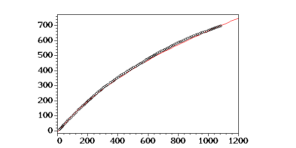
Perl
$maple->ReturnAST(0);
@res = ();
my $b = 3.5;
while ($b <= 5.5) {
my @rec = fit_curve('3.2mm', $b);
$maple->err_seq();
my @signs = sign_seq;
push @res, join('', @signs);
$res[-1] .= ' *' if $b eq 4.5;
$b += 0.1;
}
join "\n", @res;
Output:
+++++++++++++++++++++++++++++++++++++++++++------------------------------------------------------------------+
+++++++++++++++++++++++++++++++++++++++++++------------------------------------------------------------------+
+++++++++++++++++++++++++++++++++++++++++++------------------------------------------------------------------+
+++++++++++++++++++++++++++++++++++++++++++------------------------------------------------------------------+
+++++++++++++++++++++++++++++++++++++++++++------------------------------------------------------------------+
+++++++++++++++++++++++++++++++++++++++++++------------------------------------------------------------------+
+++++++++++++++++++++++++++++++++++++++++++++----------------------------------------------------------------+
++++++++++++++++++++++++++++++++++++++++++++++-+-----------------------------------------------------------+++
----++++++++++++++++++++++++++++++++++++++++++++-----------------------------------------------------------+++
-----------++++++++++++++++++++++++++++++++++++++--+------------------------------------------------------++++
---------------+++++++++++++++++++++++++++++++++++++++++-+++-++++++--++-----------------------------------++++ *
-----------------+++++++++++++++++++++++++++++++++++++++++++++++++++++++++++++++---------------------+++++++++
-------------------+++++++++++++++++++++++++++++++++++++++++++++++++++++++++++++++++++++++++------++++++++++++
---------------------+++++++++++++++++++++++++++++++++++++++++++++++++++++++++++++++++++++++++++++++++++++++++
------------------------++++++++++++++++++++++++++++++++++++++++++++++++++++++++++++++++++++++++++++++++++++++
------------------------++++++++++++++++++++++++++++++++++++++++++++++++++++++++++++++++++++++++++++++++++++++
------------------------++++++++++++++++++++++++++++++++++++++++++++++++++++++++++++++++++++++++++++++++++++++
--------------------------++++++++++++++++++++++++++++++++++++++++++++++++++++++++++++++++++++++++++++++++++++
---------------------------+++++++++++++++++++++++++++++++++++++++++++++++++++++++++++++++++++++++++++++++++++
---------------------------+++++++++++++++++++++++++++++++++++++++++++++++++++++++++++++++++++++++++++++++++++
---------------------------+++++++++++++++++++++++++++++++++++++++++++++++++++++++++++++++++++++++++++++++++++
从这幅图案，我们看到，原先定下的三条规律已不再严格遵守了。事实上， 从图上看，我倒是觉得 4.6 更像是“最佳值”，但是误差计算的结果却给 出了否定的结论。不过，老实说，4.6 与 4.5 的误差值真的还是很接近的。 从这个案例我们至少可以说，前面的三条规则只能帮助我们找到最佳值 所在的一个比较小的区间，真正的高精度的 b 值只能靠所谓的“笨办法”，即 以固定步长对区间进行遍历的办法才能取得。
因此两种方法应该结合起来使用。
迫于时间的压力，我打算利用目测法来替代 +/- 号计数法来选择最佳值的合 理区间。现在的当务之急还是迅速得到 x-y 平面上的 8 条曲线的经验公式。
为了便于调用，我使用函数对前面的代码进行封装：
Perl
sub fit_curve_between {
my ($key, $left, $right, $step) = @_;
$maple->ReturnAST(0);
my @errs;
$b = $left;
while ($b <= $right) {
my @rec = fit_curve($key, $b);
push @rec, $b;
push @rec, $maple->calc_err();
push @errs, [@rec];
$b += $step;
}
@errs = sort { $a->[2] <=> $b->[2] } @errs;
return (@{ $errs[0] });
}
No Output
现在我们就可以反复调用了：
Perl
($eqn, $b, $err) = fit_curve_between('0.8mm', 2.771, 2.789, 0.001);
@eqns = ();
push @eqns, [0.8, $eqn];
($eqn, $b, $err);
Output:
1.285763168*ln(x+1.)^2.784,2.784,2329.842269
我们作出该经验公式的图象：
Perl
fit_curve('0.8mm', $b);
plot_curve('image/diag8a.gif');
No Output
1.0mm
Perl
($eqn, $b, $err) = fit_curve_between('1.0mm', 3.031, 3.049, 0.001);
push @eqns, [1.0, $eqn];
($eqn, $b, $err);
Output:
.9886632949*ln(x+1.)^3.038,3.038,6108.046744
我们作出该经验公式的图象：
Perl
fit_curve('1.0mm', $b);
plot_curve('image/diag9a.gif');
No Output
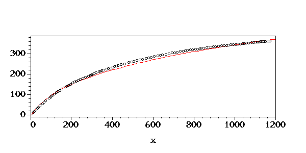
1.2mm
Perl
($eqn, $b, $err) = fit_curve_between('1.2mm', 3.181, 3.199, 0.001);
push @eqns, [1.2, $eqn];
($eqn, $b, $err);
Output:
.8728541916*ln(x+1.)^3.188,3.188,11395.87488
我们作出该经验公式的图象：
Perl
fit_curve('1.2mm', $b);
plot_curve('image/diag10a.gif');
No Output
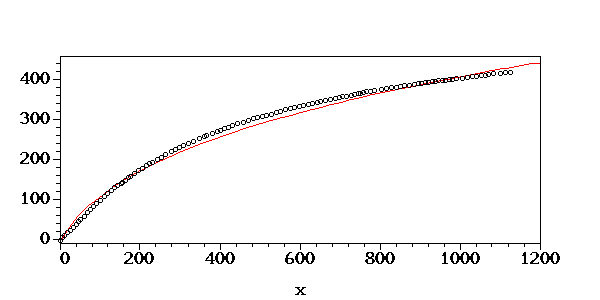
1.6mm
Perl
($eqn, $b, $err) = fit_curve_between('1.6mm', 3.451, 3.469, 0.001);
push @eqns, [1.6, $eqn];
($eqn, $b, $err);
Output:
.5770046871*ln(x+1.)^3.468,3.468,14008.79744
我们作出该经验公式的图象：
Perl
fit_curve('1.6mm', $b);
plot_curve('image/diag11a.gif');
No Output
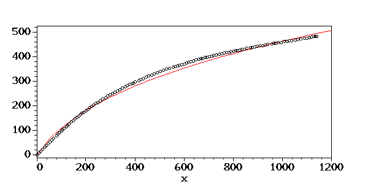
2.3mm
Perl
($eqn, $b, $err) = fit_curve_between('2.3mm', 3.881, 3.899, 0.001);
push @eqns, [2.3, $eqn];
($eqn, $b, $err);
Output:
.2866047752*ln(x+1.)^3.891,3.891,3052.950152
我们作出该经验公式的图象：
Perl
fit_curve('2.3mm', $b);
plot_curve('image/diag12a.gif');
No Output
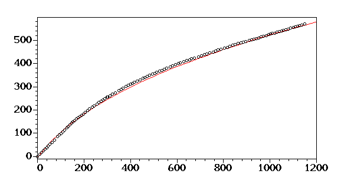
3.2mm
Perl
($eqn, $b, $err) = fit_curve_between('3.2mm', 4.531, 4.549, 0.001);
push @eqns, [3.2, $eqn];
($eqn, $b, $err);
Output:
.1043025567*ln(x+1.)^4.539,4.539,2553.031873
我们作出该经验公式的图象：
Perl
fit_curve('3.2mm', $b);
plot_curve('image/diag13a.gif');
No Output
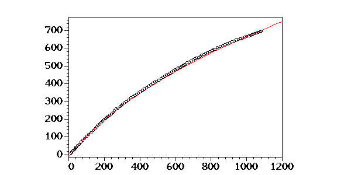
4.5mm
Perl
($eqn, $b, $err) = fit_curve_between('4.5mm', 4.931, 4.949, 0.001);
push @eqns, [4.5, $eqn];
($eqn, $b, $err);
Output:
.565881945e-1*ln(x+1.)^4.936,4.936,10253.65867
我们作出该经验公式的图象：
Perl
fit_curve('4.5mm', $b);
plot_curve('image/diag14a.gif');
No Output
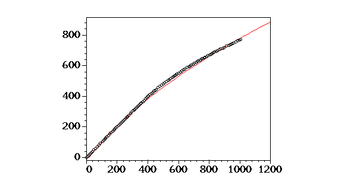
5.0mm
Perl
($eqn, $b, $err) = fit_curve_between('5.0mm', 5.631, 5.649, 0.001);
push @eqns, [5.0, $eqn];
($eqn, $b, $err);
Output:
.171426539e-1*ln(x+1.)^5.635,5.635,4351.183886
我们作出该经验公式的图象：
Perl
fit_curve('5.0mm', $b);
plot_curve('image/diag15a.gif');
No Output
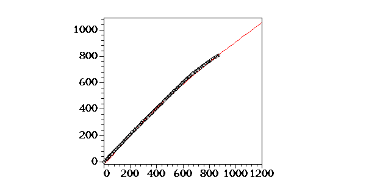
最后我们将八条曲线的经验公式输入到 YAML 文件：
Perl
DumpFile('data/xy-eqns.yml', \@eqns);
Output:
1
我们下面不妨将 8 条曲线画到一线图中：
Perl
use YAML qw(LoadFile Dump DumpFile);
@eqns = @{ LoadFile 'data/xy-eqns.yml' };
Dump(\@eqns);
Output:
---
-
- 0.8
- 1.285763168*ln(x+1.)^2.784
-
- 1
- .9886632949*ln(x+1.)^3.038
-
- 1.2
- .8728541916*ln(x+1.)^3.188
-
- 1.6
- .5770046871*ln(x+1.)^3.468
-
- 2.3
- .2866047752*ln(x+1.)^3.891
-
- 3.2
- .1043025567*ln(x+1.)^4.539
-
- 4.5
- .565881945e-1*ln(x+1.)^4.936
-
- 5
- .171426539e-1*ln(x+1.)^5.635
Perl
");
@list2;
Output:
z_0,z_1,z_2,z_3,z_4,z_5,z_6,z_7
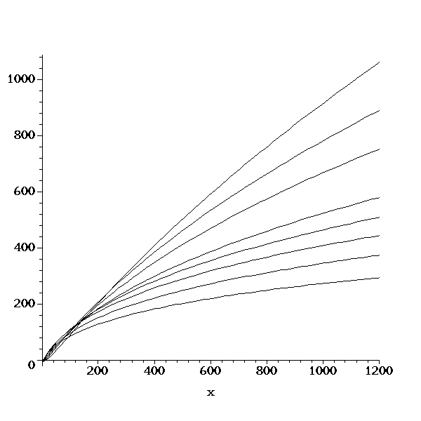
| surf-fit - Surface Fitting |